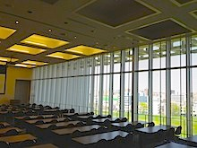

Location
MLAB Sapporo is hosted by Creative Research Institution (CRIS), Hokkaido University located in Sapporo, Hokkaido. See here (in English) or here (in Japanese) for more info about Sapporo and Hokkaido.
The workshop will be held in the main conference room, 05-213 on the 5th floor of the main building.

The main building of Creative Research Institution is located on the north Sapporo campus of Hokkaido University. The official campus maps in PDF are available here.
Directions to CRIS
See the CRIS website or the location in google map. The easist way is to first get to JR Sapporo station, have a 7 min walk, and take the campus loop shuttle from bus stop No.1 to No.10 (the route map here).